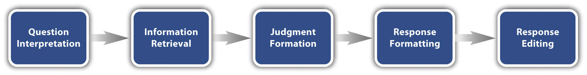
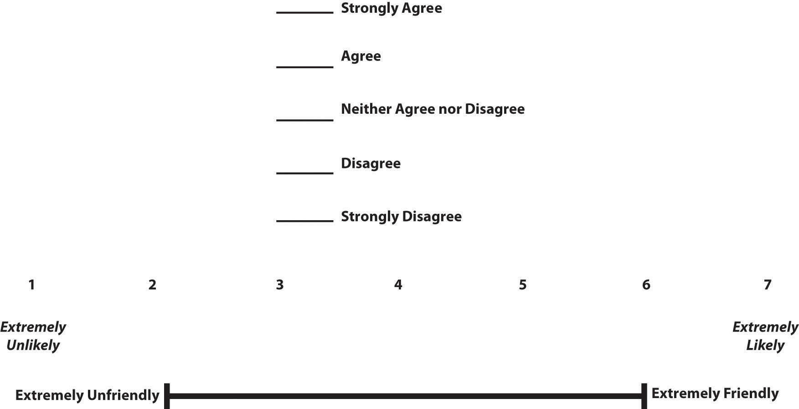

The heart of any survey research project is the survey questionnaire itself. Although it is easy to think of interesting questions to ask people, constructing a good survey questionnaire is not easy at all. The problem is that the answers people give can be influenced in unintended ways by the wording of the items, the order of the items, the response options provided, and many other factors. At best, these influences add noise to the data. At worst, they result in systematic biases and misleading results. In this section, therefore, we consider some principles for constructing survey questionnaires to minimize these unintended effects and thereby maximize the reliability and validity of respondents’ answers.
Before looking at specific principles of survey questionnaire construction, it will help to consider survey responding as a psychological process.
Figure 9.1 "Model of the Cognitive Processes Involved in Responding to a Survey Item" presents a model of the cognitive processes that people engage in when responding to a survey item (Sudman, Bradburn, & Schwarz, 1996).Sudman, S., Bradburn, N. M., & Schwarz, N. (1996). Thinking about answers: The application of cognitive processes to survey methodology. San Francisco, CA: Jossey-Bass. Respondents must interpret the question, retrieve relevant information from memory, form a tentative judgment, convert the tentative judgment into one of the response options provided (e.g., a rating on a 1-to-7 scale), and finally edit their response as necessary.
Figure 9.1 Model of the Cognitive Processes Involved in Responding to a Survey Item
Consider, for example, the following questionnaire item:
How many alcoholic drinks do you consume in a typical day?
Although this item at first seems straightforward, it poses several difficulties for respondents. First, they must interpret the question. For example, they must decide whether “alcoholic drinks” include beer and wine (as opposed to just hard liquor) and whether a “typical day” is a typical weekday, typical weekend day, or both. Once they have interpreted the question, they must retrieve relevant information from memory to answer it. But what information should they retrieve, and how should they go about retrieving it? They might think vaguely about some recent occasions on which they drank alcohol, they might carefully try to recall and count the number of alcoholic drinks they consumed last week, or they might retrieve some existing beliefs that they have about themselves (e.g., “I am not much of a drinker”). Then they must use this information to arrive at a tentative judgment about how many alcoholic drinks they consume in a typical day. For example, this might mean dividing the number of alcoholic drinks they consumed last week by seven to come up with an average number per day. Then they must format this tentative answer in terms of the response options actually provided. In this case, the options pose additional problems of interpretation. For example, what does “average” mean, and what would count as “somewhat more” than average? Finally, they must decide whether they want to report the response they have come up with or whether they want to edit it in some way. For example, if they believe that they drink much more than average, they might not want to report this for fear of looking bad in the eyes of the researcher.
From this perspective, what at first appears to be a simple matter of asking people how much they drink (and receiving a straightforward answer from them) turns out to be much more complex.
Again, this complexity can lead to unintended influences on respondents’ answers. These are often referred to as context effectsAn unintended effect of the context in which a response is made. In within-subjects experiments, this can be an effect of being tested in one condition on how participants perceive stimuli or interpret their task and therefore how they respond in later conditions. In survey research, this can be an effect of the surrounding items or the response scale on responses to a particular item. because they are not related to the content of the item but to the context in which the item appears (Schwarz & Strack, 1990).Schwarz, N., & Strack, F. (1990). Context effects in attitude surveys: Applying cognitive theory to social research. In W. Stroebe & M. Hewstone (Eds.), European review of social psychology (Vol. 2, pp. 31–50). Chichester, UK: Wiley. For example, there is an item-order effectThe effect of responding to one survey item on responses to a later survey item. when the order in which the items are presented affects people’s responses. One item can change how participants interpret a later item or change the information that they retrieve to respond to later items. For example, researcher Fritz Strack and his colleagues asked college students about both their general life satisfaction and their dating frequency (Strack, Martin, & Schwarz, 1988).Strack, F., Martin, L. L., & Schwarz, N. (1988). Priming and communication: The social determinants of information use in judgments of life satisfaction. European Journal of Social Psychology, 18, 429–442. When the life satisfaction item came first, the correlation between the two was only −.12, suggesting that the two variables are only weakly related. But when the dating frequency item came first, the correlation between the two was +.66, suggesting that those who date more have a strong tendency to be more satisfied with their lives. Reporting the dating frequency first made that information more accessible in memory so that they were more likely to base their life satisfaction rating on it.
The response options provided can also have unintended effects on people’s responses (Schwarz, 1999).Schwarz, N. (1999). Self-reports: How the questions shape the answers. American Psychologist, 54, 93–105. For example, when people are asked how often they are “really irritated” and given response options ranging from “less than once a year” to “more than once a month,” they tend to think of major irritations and report being irritated infrequently. But when they are given response options ranging from “less than once a day” to “several times a month,” they tend to think of minor irritations and report being irritated frequently. People also tend to assume that middle response options represent what is normal or typical. So if they think of themselves as normal or typical, they tend to choose middle response options. For example, people are likely to report watching more television when the response options are centered on a middle option of 4 hours than when centered on a middle option of 2 hours.
Questionnaire items can be either open-ended or closed-ended. Open-ended itemsA questionnaire item that asks a question and allows respondents to respond in whatever way they want. simply ask a question and allow participants to answer in whatever way they choose. The following are examples of open-ended questionnaire items.
Open-ended items are useful when researchers do not know how participants might respond or want to avoid influencing their responses. They tend to be used when researchers have more vaguely defined research questions—often in the early stages of a research project. Open-ended items are relatively easy to write because there are no response options to worry about. However, they take more time and effort on the part of participants, and they are more difficult for the researcher to analyze because the answers must be transcribed, coded, and submitted to some form of content analysis.
Closed-ended itemsA questionnaire item that asks a question and provides a set of response options for respondents to choose from. ask a question and provide a set of response options for participants to choose from. The alcohol item just mentioned is an example, as are the following:
How old are you?
On a scale of 0 (no pain at all) to 10 (worst pain ever experienced), how much pain are you in right now?
Have you ever in your adult life been depressed for a period of 2 weeks or more?
Closed-ended items are used when researchers have a good idea of the different responses that participants might make. They are also used when researchers are interested in a well-defined variable or construct such as participants’ level of agreement with some statement, perceptions of risk, or frequency of a particular behavior. Closed-ended items are more difficult to write because they must include an appropriate set of response options. However, they are relatively quick and easy for participants to complete. They are also much easier for researchers to analyze because the responses can be easily converted to numbers and entered into a spreadsheet. For these reasons, closed-ended items are much more common.
All closed-ended items include a set of response options from which a participant must choose. For categorical variables like sex, race, or political party preference, the categories are usually listed and participants choose the one (or ones) that they belong to. For quantitative variables, a rating scale is typically provided. A rating scaleAn ordered set of response options to a closed-ended questionnaire item. is an ordered set of responses that participants must choose from. Figure 9.2 "Example Rating Scales for Closed-Ended Questionnaire Items" shows several examples. The number of response options on a typical rating scale ranges from three to 11—although five and seven are probably most common. They can consist entirely of verbal labels or they can consist of a set of numbers with verbal labels as “anchors.” In some cases, the verbal labels or numbers can be supplemented with (or even replaced by) meaningful graphics. The last rating scale shown in Figure 9.2 "Example Rating Scales for Closed-Ended Questionnaire Items" is a visual-analog scale, on which participants make a mark somewhere along the horizontal line to indicate the magnitude of their response.
Figure 9.2 Example Rating Scales for Closed-Ended Questionnaire Items
In reading about psychological research, you are likely to encounter the term Likert scale. Although this term is sometimes used to refer to almost any rating scale (e.g., a 0-to-10 life satisfaction scale), it has a much more precise meaning.
In the 1930s, researcher Rensis Likert (pronounced LICK-ert) created a new approach for measuring people’s attitudes (Likert, 1932).Likert, R. (1932). A technique for the measurement of attitudes. Archives of Psychology, 140, 1–55. It involves presenting people with several statements—including both favorable and unfavorable statements—about some person, group, or idea. Respondents then express their agreement or disagreement with each statement on a 5-point scale: Strongly Agree, Agree, Neither Agree nor Disagree, Disagree, Strongly Disagree. Numbers are assigned to each response (with reverse coding as necessary) and then summed across all items to produce a score representing the attitude toward the person, group, or idea. The entire set of items came to be called a Likert scale.
Thus unless you are measuring people’s attitude toward something by assessing their level of agreement with several statements about it, it is best to avoid calling it a Likert scale. You are probably just using a “rating scale.”
We can now consider some principles of writing questionnaire items that minimize unintended context effects and maximize the reliability and validity of participants’ responses. A rough guideline for writing questionnaire items is provided by the BRUSO model (Peterson, 2000).Peterson, R. A. (2000). Constructing effective questionnaires. Thousand Oaks, CA: Sage. An acronym, BRUSOA prescriptive model for writing good questionnaire items. They should be brief, relevant, unambiguous, specific, and objective. stands for “brief,” “relevant,” “unambiguous,” “specific,” and “objective.” Effective questionnaire items are brief and to the point. They avoid long, overly technical, or unnecessary words. This makes them easier for respondents to understand and faster for them to complete. Effective questionnaire items are also relevant to the research question. If a respondent’s sexual orientation, marital status, or income is not relevant, then items on them should probably not be included. Again, this makes the questionnaire faster to complete, but it also avoids annoying respondents with what they will rightly perceive as irrelevant or even “nosy” questions. Effective questionnaire items are also unambiguous; they can be interpreted in only one way. Part of the problem with the alcohol item presented earlier in this section is that different respondents might have different ideas about what constitutes “an alcoholic drink” or “a typical day.” Effective questionnaire items are also specific, so that it is clear to respondents what their response should be about and clear to researchers what it is about. A common problem here is closed-ended items that are “double barreled.” They ask about two conceptually separate issues but allow only one response. For example, “Please rate the extent to which you have been feeling anxious and depressed.” This item should probably be split into two separate items—one about anxiety and one about depression. Finally, effective questionnaire items are objective in the sense that they do not reveal the researcher’s own opinions or lead participants to answer in a particular way. Table 9.2 "BRUSO Model of Writing Effective Questionnaire Items, Plus Examples" shows some examples of poor and effective questionnaire items based on the BRUSO criteria.
Table 9.2 BRUSO Model of Writing Effective Questionnaire Items, Plus Examples
| Criterion | Poor | Effective |
|---|---|---|
| B—Brief | “Are you now or have you ever been the possessor of a firearm?” | “Have you ever owned a gun?” |
| R—Relevant | “What is your sexual orientation?” | Do not include this item unless it is clearly relevant to the research. |
| U—Unambiguous | “Are you a gun person?” | “Do you currently own a gun?” |
| S—Specific | “How much have you read about the new gun control measure and sales tax?” |
“How much have you read about the new gun control measure?” “How much have you read about the new sales tax?” |
| O—Objective | “How much do you support the new gun control measure?” | “What is your view of the new gun control measure?” |
For closed-ended items, it is also important to create an appropriate response scale. For categorical variables, the categories presented should generally be mutually exclusive and exhaustive. Mutually exclusive categories do not overlap. For a religion item, for example, the categories of Christian and Catholic are not mutually exclusive but Protestant and Catholic are. Exhaustive categories cover all possible responses. Although Protestant and Catholic are mutually exclusive, they are not exhaustive because there are many other religious categories that a respondent might select: Jewish, Hindu, Buddhist, and so on. In many cases, it is not feasible to include every possible category, in which case an Other category, with a space for the respondent to fill in a more specific response, is a good solution. If respondents could belong to more than one category (e.g., race), they should be instructed to choose all categories that apply.
For rating scales, five or seven response options generally allow about as much precision as respondents are capable of. However, numerical scales with more options can sometimes be appropriate. For dimensions such as attractiveness, pain, and likelihood, a 0-to-10 scale will be familiar to many respondents and easy for them to use. Regardless of the number of response options, the most extreme ones should generally be “balanced” around a neutral or modal midpoint. An example of an unbalanced rating scale measuring perceived likelihood might look like this:
Unlikely | Somewhat Likely | Likely | Very Likely | Extremely Likely
A balanced version might look like this:
Extremely Unlikely | Somewhat Unlikely | As Likely as Not | Somewhat Likely | Extremely Likely
Note, however, that a middle or neutral response option does not have to be included. Researchers sometimes choose to leave it out because they want to encourage respondents to think more deeply about their response and not simply choose the middle option by default.
Numerical rating scales often begin at 1 and go up to 5 or 7. However, they can also begin at 0 if the lowest response option means the complete absence of something (e.g., no pain). They can also have 0 as their midpoint, but it is important to think about how this might change people’s interpretation of the response options. For example, when asked to rate how successful in life they have been on a 0-to-10 scale, many people use numbers in the lower half of the scale because they interpret this to mean that they have been only somewhat successful in life. But when asked to rate how successful they have been in life on a −5 to +5 scale, very few people use numbers in the lower half of the scale because they interpret this to mean they have actually been unsuccessful in life (Schwarz, 1999).Schwarz, N. (1999). Self-reports: How the questions shape the answers. American Psychologist, 54, 93–105.
Writing effective items is only one part of constructing a survey questionnaire. For one thing, every survey questionnaire should have a written or spoken introduction that serves two basic functions (Peterson, 2000).Peterson, R. A. (2000). Constructing effective questionnaires. Thousand Oaks, CA: Sage. One is to encourage respondents to participate in the survey. In many types of research, such encouragement is not necessary either because participants do not know they are in a study (as in naturalistic observation) or because they are part of a subject pool and have already shown their willingness to participate by signing up and showing up for the study. Survey research usually catches respondents by surprise when they answer their phone, go to their mailbox, or check their e-mail—and the researcher must make a good case for why they should agree to participate. Thus the introduction should briefly explain the purpose of the survey and its importance, provide information about the sponsor of the survey (university-based surveys tend to generate higher response rates), acknowledge the importance of the respondent’s participation, and describe any incentives for participating.
The second function of the introduction is to establish informed consent. Remember that this means describing to respondents everything that might affect their decision to participate. This includes the topics covered by the survey, the amount of time it is likely to take, the respondent’s option to withdraw at any time, confidentiality issues, and so on. Written consent forms are not typically used in survey research, so it is important that this part of the introduction be well documented and presented clearly and in its entirety to every respondent.
The introduction should be followed by the substantive questionnaire items. But first, it is important to present clear instructions for completing the questionnaire, including examples of how to use any unusual response scales. Remember that this is the point at which respondents are usually most interested and least fatigued, so it is good practice to start with the most important items for purposes of the research and proceed to less important items. Items should also be grouped by topic or by type. For example, items using the same rating scale (e.g., a 5-point agreement scale) should be grouped together if possible to make things faster and easier for respondents. Demographic items are often presented last because they are least interesting to participants but also easy to answer in the event respondents have become tired or bored. Of course, any survey should end with an expression of appreciation to the respondent.
Practice: Write survey questionnaire items for each of the following general questions. In some cases, a series of items, rather than a single item, might be necessary.